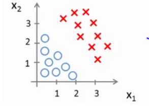

吴恩达机器学习笔记3: 逻辑回归
1.分类问题
在谈及机器学习的监督学习算法时，基本都能脱口而出其主要作用于回归与分类，前面的文章已经谈过了回归问题的相关算法，所以本文来学习一下分类问题中流行的学习算法: 逻辑回归(Logistic Regression）。在分类问题中，模型所需要预测的$y$值（变量）是离散的，即我们尝试预测的是结果是否是属于某一个类别(真/假?)。
分类问题的例子有:
- 邮件: 垃圾邮件/正常邮件?
- 线上交易: 是否是诈骗?
- 肿瘤: 恶性?良性？
以二分类问题为例，假设把因变量(dependent variable)可能属于的两个类分别称为负向类(negative class)和正向类(positive class)，用数字表示这两个类（0表示负向类，例: 良性肿瘤；1表示正向类，例:恶性肿瘤。），则因变量$y \in{0,1}$。
假设有如图1-1的样本分布:
现在希望的是能够采用某种算法能够在已有数据集的基础上构造模型去预测给定肿瘤大小的类别是什么?恶性还是良性。
基于学过的线性回归算法，此处采用线性回归算法去拟合，如图1-2所示:
假设把该分类器的输出$h_θ(x)$的阈值定为0.5:
- 如果$h_θ(x)≥0.5$，预测$y=1$，即为恶性肿瘤。
- 如果$h_θ(x)＜0.5$，预测$y=0$，即为良性肿瘤。
显然，可以从图中看出，这个算法在该例子上表现还是不错的，但是如果考虑增加一个额外的样本，如图1-3所示:
还是把该分类器的输出的阈值定为0.5,可以从图中看出，相比上一个来说，该分类器的表现并不是很好，可见，线性回归算法受该样本的影响还是蛮大的，还有另一个问题就是在线性回归中的$h_θ(x)$的值可能远大于1或是远小于0，尽管我们知道选取标签还是0或1，但是还会觉得有点奇怪，因为它预测的值超过了$[0,1]$这个范围。
为了解决上述问题，在分类问题中常用的是逻辑回归算法，它的性质是:能够保证输出值在0到1之间，即$0≤h_θ(x)≤1$。
逻辑回归算法是分类算法，它适用于标签$y$取值离散的情况。另，对于多分类，$y$的取值可能有多种，而不仅仅是0和1。
2. 假设表示
上文已经提到过线性回归算法中的假设函数所预测的值可能会超过这个范围，会对预测结果的准确性带来一些影响。所以为了保证，引入了逻辑回归模型假设: ,其中是参数向量，$X$为特征向量，g代表逻辑函数(或Sigmoid 函数),公式为:
该函数的图像为:
可见，经过sigmoid函数的映射，假设函数的输出已经能够保证是在$[0,1]$的范围内了。不过，这个$h_θ(x)$的输出到底表达的是怎样的一个意思？
在吴恩达老师的视频里，他把$h_\theta(x)$当作是在给定输入特征$x$下评估$y=1$的可能性。
以一个例子来说明，假设
假设函数输出为，则是相当于告诉病人有70%的可能该肿瘤是恶性的。用概率论的方式表示就是$h_\theta(x)=P(y=1|x;\theta)$，其意思就是:在给定的特征x下，通过给定的参数θ的情况，$y=1$的可能性是多少?对应的，我们也能够求得$y=0$的可能性。
因为：$P(y=0|x;\theta)+P(y=1|x;\theta)=1$
移项可得：$P(y=0|x;\theta)=1-P(y=1|x;\theta)$
3. 决策边界
先简单描述一下，什么时候预测y为1或是0。假设时预测$y=1$，时预测$y=0$，又因为以及Sigmoid函数的图像，可以简化理解为: 即,此时预测$y=1$，与此同理，$\theta^TX＜0$即$h_\theta(x)＜0.5$，此时预测$y=0$。(0.5作为输出的阈值)
那么什么是“决策边界”呢？大白话就是: 用以区分不同类别的分界线，可以是直线，也可以是曲线等，它不是数据集的属性，是假设函数的属性并由其参数所决定。
下面以一些例子进行形象的一个表示:
假设有这样的一个模型:
以及一个数据集，其分布如图3-1所示:

现在假设我们经过梯度下降算法，已经求得三个参数的值:-3，1，1。则当$-3+x_1+x_2≥0$时，即当$x_1+x_2≥3$时，将预测$y=1$。此时在图3-1绘制一下直线$x_1+x_2=-3$，如图3-2所示:
可以从图中看出该条直线已经将$y=1$和$y=0$的两块区域区分开来了，此时的分界线即为决策边界，用于根据输入的特征进行决策输出值该归于哪一类。
再看一个例子，假设数据分布如图3-3所示:
此时在用直线是无法将两个不同的类别区分开来的，这时的模型定为:
类似的，已知其参数为:-1，0，0，1，1，则$-1+x_1^2+x_2^2≥0$时，预测$y=1$，并在图3-3中绘制曲线$x_1^2+x_2^2=-1$，如图3-4所示:
可以从图中看出，以该曲线作为决策边界已经成功将$y=0$和$y=1$的区域区分开来了。
在现实中，我们可能会遇到更为复杂的数据分布，但是我们还是可以选择使用更为复杂的模型去适应复杂的数据分布。
4.代价函数
前面的部分已经提到过了假设函数以及决策边界，现在问题是如何求得参数θ?具体如图4-1所示:
在线性回归的那部分中的代价函数表达为:
它代表的是误差的平方和，从理论上来说，应该也是可以对逻辑回归模型沿用该定义。但是，当我们将上文提到的假设$h=g(\theta^TX)$带入该代价函数中时，得到的代价函数将是一个非凸函数(non-convexfunction)，如图4-2所示:
从凸函数(右图)与非凸函数(左图)的对比来说，显而易见，非凸函数存在多个局部最小值，它不像凸函数一样全局仅有一个最小值，这对于使用梯度下降算法获取全局最小值是非常不利的。
所以，要对该代价函数进行定义:
其中，$Cost(h_\theta(x,y)$ 定义为:
其中，与$Cost(h_\theta(x,y)$ 之间的关系如图4-3所示:
可以从图中看出，如果实际是，如果输出的值也为1，那么误差则为0，如果不为1，则误差随着的 变小而变大(可以从图中看出，当趋于0时，误差值是趋于无穷的，这也是蛮符合常理的，因为此时)。类似的，如果实际上的，如果输出的值为0，则对应的误差也为0，如果不为0，则误差随着的变大而变大。
通过重新定义，可以看到该代价函数已经是凸函数了，这时再利用梯度下降算法就可以很容易获得使得代价函数全局最小时的参数了。
5.代价函数简化与梯度下降
为了方便计算机进行运算，需要对式(7)进行简化:
经过简化后，$J(\theta)$已经能够同时计算标签为0和1时的误差值了。上文已经提过该函数为凸函数，下一步就是根据$J(\theta)$采用梯度下降算法获得对应的参数$\theta$。
梯度下降算法在文章：吴恩达机器学习笔记2: 线性回归，已经做了较为详细的描述。为了获取使$J(\theta)$最小的参数值，需要进行如图5-1的操作（未进行求偏导）:
通过不断修正参数$\theta$的值，使其逐步移动到全局最小点。其中难点在于: 计算偏导数。
求导后的算法模板如图5-2所示（图中少了$\frac{1}{m}$）:
推导过程（此处的$\log=\ln$，下述求导均按照$ln$的求导法则就行求导，为了表达方便，去掉了上标）：
令，求实际上是求$\frac{\partial I}{\partial \theta}$，其为:
已知$h_\theta(x)=\frac{1}{1+e^{-\theta^Tx}}$，对其求导为:
联合式(9)与式(10)，可得:
将其带入到$\frac{\partial J(\theta)}{\partial \theta}$中，可得（不再省略上标）:
注: 尽管该条等式与线性回归中求偏导的算法公式形式一致，但此处的$h_\theta(x)$是与线性回归中的假设函数是不一样的。在梯度下降的时候，如果不同特征之间的数据差异过大，适当的特征缩放是很有必要的
求得参数$\theta$的方式有很多，除了梯度下降算法外，还有: 共轭梯度(Gradient descent)、变尺度法(BFGS)和限制变尺度法(L-BFGS)等，它的好处在于: 不需要手动地选取学习率$\alpha$、速度快于梯度下降，但也有缺点: 算法更为复杂。如果有多余的时间，可以尝试去了解这些算法。
6.多分类问题: 一对多
多分类问题不像二分类问题，它需要预测的离散不止有2个，比如:
- 邮件归类: 来自工作的邮件（用$y=0$表示）、来自朋友的邮件（用$y=$1表示）、来自家庭的邮件（用$y=2$表示）、来自兴趣爱好的邮件（用$y=3$表示）。
- 医疗诊断: 没有生病（用$y=0$表示）、感冒（用$y=1$表示）、流感（用$y=2$表示）等。
- 天气：晴天（用$y=0$表示）、多云（用$y=$1表示）、雨天（用$y=2$表示）、下雪天（用$y=3$表示）等
二分类和多分类的数据分布可能是如图6-1所示的样子（图中使用了不同的符号表达不同的类别）:
利用“一对多”的思想，可以利用逻辑回归算法构建模型进行预测。不过这里应该有个疑问:逻辑回归算法中的是直线，只能够区分正类和负类，多分类是如何解决的? 其解决方案为：创建新的“伪”训练集，将某一个类别定义为正类，其他类别为负类，这样就可以定义了3条曲线（此时假设三角形类别定义为$y=1$表示，方框类别定义为$y=2$表示，叉叉类别定义为$y=3$表示）。如图6-2所示，分别是3条直线所作的决策边界:
并使用$h_\theta^{(i)}(x)$表示每一个类别的预测结果（预测$y=i$的可能性），那么对应新输入的特征$x$，可以根据不同类别的预测结果进行判别，取最大可能性的类别作为预测的结果。